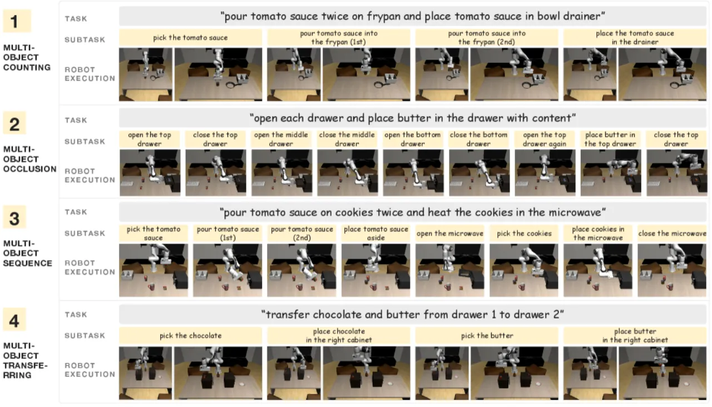
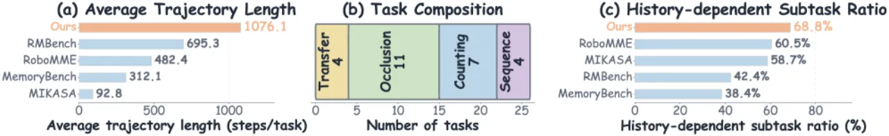
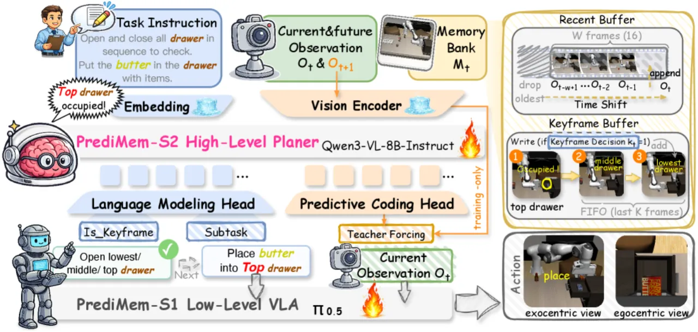
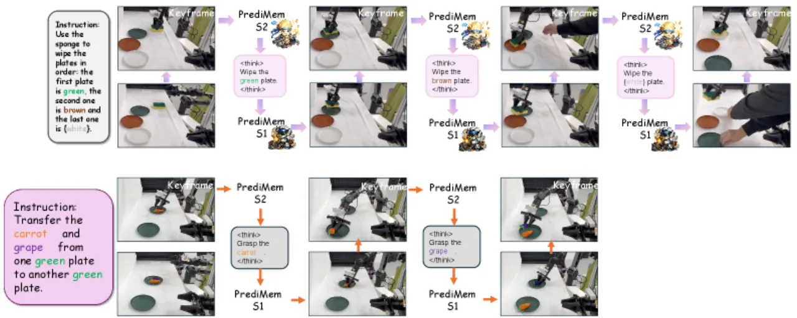
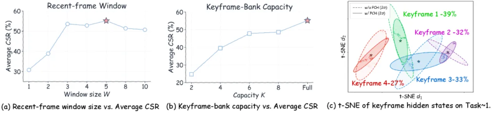

RoboMemArena 是首个系统性评估机器人记忆能力的大规模基准：包含 26 项仿真任务与 5 项真实世界任务，平均轨迹长达 1000+ 步，68.9% 的子任务依赖历史记忆。作者同步提出双系统 VLA 模型 PrediMem，通过分级记忆与 predictive coding 在所有任务类别上显著超越现有方法。
现有机器人操作基准大多关注单步或短序列动作，对跨时间步记忆能力的评估严重不足。当物体被遮挡、状态发生改变、或任务依赖此前操作结果时，reactive 策略（仅依赖当前观测）将系统性失败——而这恰恰是真实操作场景中的常态。
"Existing robotic memory benchmarks suffer from...lack of multimodal annotations...limited task coverage...restricted to simulation."


论文在 14 个已有机器人基准上做了系统对比，RoboMemArena 是唯一同时满足以下全部 8 项标准的基准：长时域（>1000 步平均）、自动指令生成、原子子目标、可扩展生成、自主抓取（AnyGrasp）、状态 oracle、原生 keyframe、真实世界评估。
本文贡献两部分：(1) RoboMemArena 基准的数据生成 pipeline，利用 VLM 驱动任务分解与 AnyGrasp 自主轨迹生成；(2) 用于基准测试的双系统 VLA 模型 PrediMem，结合分级记忆与 predictive coding 机制。
利用 VLM 对每个任务提出有序的可执行子任务序列，自动生成结构化指令标注。
每个子任务由 AnyGrasp 自主执行，无需人工干预，生成 2,600 条长时域视觉轨迹 + 15,100 条 keyframe 对齐短片段。
基于两类准则提取 keyframe：物理交互锚点（gripper 状态转变）与运动学拐点（速度极小值、方向变化）。
TSR（Task Success Rate）：所有谓词均满足才算成功。CSR（Cumulative Success Rate）：衡量每项任务通过的 verification stage 比例，量化任务进展。每任务 3–9 个 stage，多数超过 5 个。

基于 Qwen3-VL-8B 的高层 VLM 规划器，管理 memory bank（recent buffer + keyframe buffer），负责预测子任务与 keyframe 决策。运行频率约 1.06 Hz，p50 延迟 0.939 秒。
以子任务条件生成动作 chunk 的低层 VLA policy，运行频率约 3.40 Hz，每次 S2 更新平均覆盖约 2.92 个 chunk，实现异步流水线。
仅在训练阶段使用的辅助损失，提升模型对状态转变的敏感度。损失函数：
ℒPre = MSE(Ẑt+1, sg(Zt+1)) + (1 − cos(Ẑt+1, sg(Zt+1)))
最优损失权重为 0.1（在 0.0–1.0 消融实验中表现最佳）。Vision tower 冻结，其余模块全量微调，训练 2 个 epoch，使用 4×H100 GPU，学习率 1×10⁻⁵。
在 RoboMemArena 的 26 项仿真任务与 5 项真实世界任务上评估 PrediMem，与 π₀.₅、HiF-VLA、MemoryVLA、MemER 以及闭源大模型（Qwen3-VL、GPT）对比。
| 方法 | Transferring TSR / CSR |
Occlusion TSR / CSR |
Counting TSR / CSR |
Sequence TSR / CSR |
Avg TSR / CSR |
|---|---|---|---|---|---|
| π₀.₅（reactive baseline） | 20.0 / 42.8 | 12.7 / 17.2 | 14.3 / 50.9 | 60.0 / 71.6 | 21.5 / 38.7 |
| HiF-VLA | 17.5 / 38.9 | 12.7 / 27.1 | 8.6 / 45.9 | 42.5 / 70.2 | 16.9 / 39.8 |
| MemoryVLA | 15.0 / 37.2 | 7.3 / 13.1 | 14.3 / 55.1 | 37.5 / 65.2 | 15.0 / 35.3 |
| MemER | 20.0 / 36.1 | 16.4 / 33.2 | 27.1 / 65.1 | 65.0 / 79.1 | 27.3 / 49.1 |
| PrediMem（本文） | 22.5 / 45.2 | 27.3 / 38.4 | 45.7 / 69.3 | 72.5 / 89.5 | 38.5 / 55.2 |
| Ground Truth Oracle | 上界参考 | 46.1 / 64.8 | |||
闭源基线：Qwen3-VL 冻结 6.0% TSR / 26.2% CSR；GPT-5.4 8.7% TSR / 30.5% CSR——"Closed-source agents transfer poorly to robotic memory-intensive tasks"。
| 方法 | Pour×2 | Brush | Transfer | Shell Game | IHMB | Avg |
|---|---|---|---|---|---|---|
| π₀.₅ | 20% | 10% | 60% | 10% | 0% | 20% |
| MemER | 30% | 50% | 80% | 40% | 0% | 40% |
| PrediMem | 60% | 60% | 80% | 50% | 10% | 52% |
IHMB（Imitate Human to Make Breakfast）是时长约 3 分钟的最长任务，仅 PrediMem 成功完成。相比 reactive baseline，PrediMem 平均提升真实世界性能 32 个百分点。


| 消融变体 | TSR (%) | CSR (%) |
|---|---|---|
| w/o Predictive Coding | 32.3 | 49.0 |
| w/o Keyframe Bank | 17.7 | 41.6 |
| PrediMem（完整） | 38.5 | 55.2 |
Predictive coding 单独贡献约 +6.2% TSR；keyframe bank 对记忆依赖任务（尤其是 Occlusion 类）至关重要，移除后 TSR 下降 20.8 个百分点。
| S2 模型规模 | TSR (%) | CSR (%) |
|---|---|---|
| Qwen3-1.7B | 19.9 | 41.4 |
| Qwen3-4B | 31.9 | 51.7 |
| Qwen3-8B（完整） | 38.5 | 55.2 |
S2 模型规模从 1.7B 扩展至 8B，性能在所有任务类别上一致提升，符合 scaling law 预期。
Qwen3-VL 冻结（6.0% TSR）与 GPT-5.4（8.7% TSR）等闭源大模型尽管具备强大的通用能力，但在记忆密集型机器人操作任务上表现远不如开源微调方案，说明通用视觉-语言能力与具身记忆能力之间存在显著差距。
真实世界评估仅覆盖 5 项任务，使用双臂平台，尚无法充分代表真实部署场景的多样性。IHMB 任务成功率仅 10%，说明长时域真实操作仍是开放挑战。
当前基准与模型均聚焦于 tabletop manipulation，尚未验证能否泛化至移动操作（mobile manipulation）或更复杂的开放世界场景。此外，数据集由仿真自动生成，仿真到现实的 visual gap 可能影响策略在真实世界的泛化。